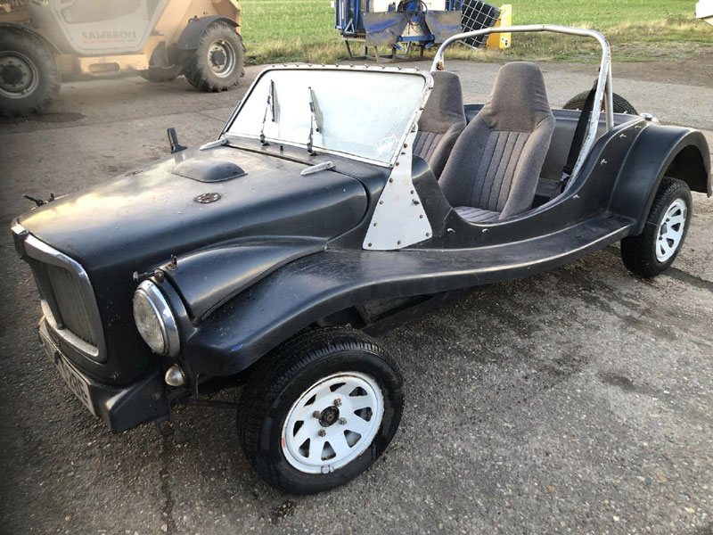

British ingenuity.
Fibreglass construction and a donor-based approach put distinctive motoring in the hands of DIY builders.
Meet the Magenta.
A characterful, no-nonsense open-top survivor. Fibreglass curves, classic British mechanical roots, and unmistakable individuality.

This Magenta has been photographed, but its interactive model has yet to be created.
Every build is different. Select a car to explore its photographs, background and 3D model status.
Fibreglass construction and a donor-based approach put distinctive motoring in the hands of DIY builders.
Body details, drivetrains, roofs and trim vary widely — a Magenta is often as individual as its builder.
Photos, stories and interactive scans help document cars from a small but fascinating corner of UK automotive history.
These are period figures for the original MG 1100-based Magenta, not verified specifications for the selected individual car or later LSR / Sprint variants.
Specifications transcribed and converted from Lightspeed Panels’ 10 August 1972 press information. Figures are approximate; factory documentation is distinct from an individual vehicle record.
In an era of garage-built specials, the Magenta combined familiar British running gear with a shape somewhere between roadster and dune buggy.
Select a view to enlarge it. Every externally sourced photograph includes its photographer and licence.
Not mass-produced. Never ordinary.
THE MAGENTA STORY 1972—1988The historical detail comes from published research and original material. Image licences and source links are documented below.
This is an independent enthusiast showcase and is not associated with a current car manufacturer. Dates and production totals vary between historical sources. Other cars pictured are separate vehicles, not alternate views of the black car.